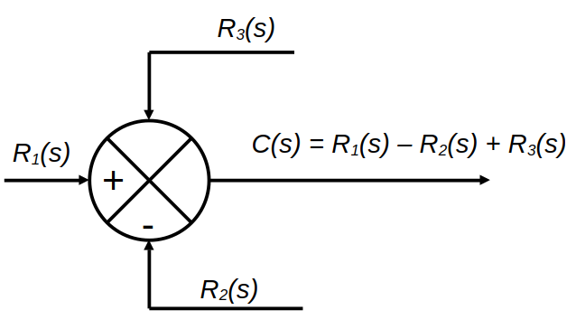
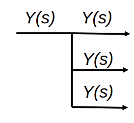
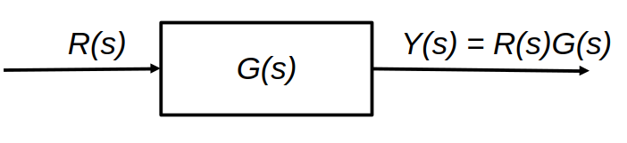
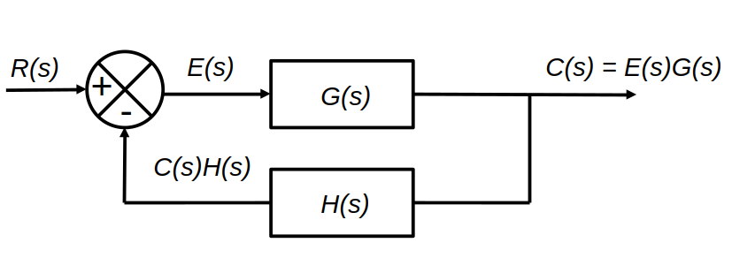
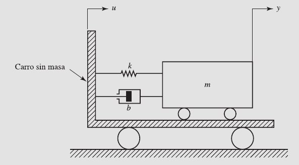
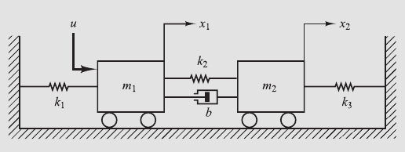
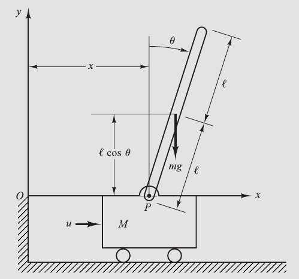
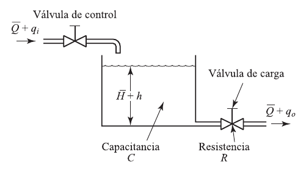

import controlSegundo Parcial
Introducción a la Ingeniería de Control
Definiciones
Variable controlada. Cantidad o condición que se mide y controla, básicamente es la salida del sistema.
Señal de control. También llamada variable manipulada. Es la cantidad o condición que el controlador modifica para afectar el valor de la variable controlada.
Controlar. Significa medir el valor de la variable controlada del sistema y aplicar la variable manipulada al sistema para corregir o limitar la desviación del valor medido respecto del valor deseado.
Plantas. Objeto físico o fenómeno que se va a controlar.
Procesos. Operación o desarrollo natural o artificial progresivamente continuo. Es la operación que se va a controlar.
Sistemas. Combinación de componentes que actúan juntos con un objetivo predeterminado.
Perturbaciones. Señal que tiende a afectar negativamente el valor de la salida de un sistema. Puede ser interna o externa, siendo una entrada más en el primer caso.
Control realimentado. Operación que con perturbaciones tiende a reducir la diferencia entre la salida del sistema y alguna entrada de referencia y lo realiza siempre tomando en cuenta esta diferencia. Se aplica a perturbaciones impredecibles ya que las conocidas siempre pueden compensarse.
Sistema de Control Robusto
Podemos definir la planta real como \(\tilde{G}(s)\), mientras que al modelo matemático que la representa como \(G(s)\). La planta real contiene incertidumbre, la cual se denota por \(\Delta(s)\).
Tanto la planta real como la nominal pueden estar relacionadas por un factor multiplicativo
\[ \tilde{G}(s)=G(s)[1+\Delta(s)] \]
o por un factor aditivo
\[ \tilde{G}(s)=G(s)+\Delta(s) \]
Al no conocer exactamente el error \(\Delta(s)\) se emplea su estimación \(W(s)\), la cual es una función de transferencia escalar tipo
\[ \|\Delta(s)\|_\infty < \|W(s)\|_\infty = max_{0\leq \omega \leq \infty}|W(j\omega)| \]
donde \(\|W(s)\|_\infty\) es el máximo valor de \(|W(j\omega)|\) para \(0\leq\omega\leq\infty\) y se denomina norma H infinito de \(W(s)\).
Utilizando el teorema de la pequeña ganancia, el proceso de diseño conlleva la determinación del controlador \(K(s)\) que satisface
\[ \left \|\frac{W(s)}{1+K(s)G(s)}\right \|_\infty <1 \]
siendo \(G(s)\) la función de transferencia del modelo, \(K(s)\) es la función de transferencia del controlador y \(W(s)\) se escoge como función de transferencia que aproxima \(\Delta(s)\). En muchos casos se satisfacen más de una desigualdad dependiente de \(G(s)\), \(K(s)\) y \(W(s)\).
Para garantizar la estabilidad robusta y el comportamiento robusto se requiere satisfacer:
\[ \left \|\frac{W_m(s)K(s)G(s)}{1+K(s)G(s)}\right \|_\infty <1 \]
para estabilidad robusta y
\[ \left \|\frac{W_s(s)}{1+K(s)G(s)}\right \|_\infty <1 \]
para comportamiento robusto.
Estabilidad robusta. El controlador \(K(s)\) garantiza la estabilidad interna de todos los sistemas que conforman la representación de la planta real.
Comportamiento robusto. Comportamiento especificado satisfecho para los sistemas que conforman la planta real representada.
Modelado matemático de Sistemas de Control
Funciones de transferencia
Para un sistema descrito mediante una ecuación diferencial lineal e invariante en el tiempo, se define como el cociente entre la transformada de Laplace de la salida (función de respuesta) y la transformada de Laplace de la entrada (función de excitación), suponiendo que todas las condiciones iniciales son \(0\).
\[G(s)=\left. \frac{L(salida)}{L(entrada)} \right |_0 = \frac{Y(s)}{X(s)}\]
Por lo tanto:
\[ Y(s)=G(s)X(s) \]
y
\[ y(t)=\int_0^t{x(\tau)g(t-\tau)d\tau}=\int_0^t{g(\tau)x(t-\tau)d\tau} \]
donde
\[ g(t), \ x(\tau) =0; \ t<0 \]
Diagramas de bloques
Elementos básicos
Punto de suma. Indica suma o resta de señales, siendo \(R_1(s)\) la señal de referencia y \(R_2(s)\) la señal que se suma (o en dado caso, puede restarse).

Punto de toma o derivación. Se emplea para indicar que alguna señal sale a diferentes lugares.

Bloque. Elemento básico que representa la función de transferencia. Tiene un efecto multiplicativo.

Lazo cerrado. La salida \(C(s)\) se realimenta al punto de suma, donde se compara con la entrada de referencia \(R(s)\). La salida del bloque \(C(s)\) se obtiene multiplicando la función de transferencia \(G(s)\) por la entrada al bloque \(E(s)\).

Sabiendo pues que la señal de salida es \(C(s)=E(s)G(s)\) y que \(E(s)=R(s)-C(s)H(s)\), podemos relacionar la primera con la señal de entrada (en este caso \(R(s)\)) de la siguiente manera:
\[ C(s)=G(s)[R(s)-C(s)H(s)] \]
o bien:
\[ \frac{C(s)}{R(s)}=\frac{G(s)}{1+G(s)H(s)} \]
A esto le llamamos la función de transferencia en lazo cerrado.
Obtención de funciones de transferencia con lenguajes de programación
Tomemos un ejemplo presente en el libro de texto Ingeniería de Control Moderna de Ogata. Tenemos dos componentes \(G_1(s)\) y \(G_2(s)\), los cuales están conectados de tres maneras diferentes: a) en serie, b) paralelo y c) en lazo cerrado, donde
\[ G_1(s)=\frac{num1}{den1}=\frac{10}{s^2+2s+10} \]
\[ G_2(s)=\frac{num2}{den2}=\frac{5}{s+5} \]
Veamos cómo obtener las funciones resultantes de estos arreglos mediante algunos lenguajes de programación.
MATLAB
De acuerdo a la bibliografía ya mencionada, en MATLAB podemos cargar nuestras funciones de la siguiente manera:
num1 = [10];
den1 = [1 2 10];
num2 = [0 5];
den2 = [1 5];Notemos que pide que las escribamos separadas en sus respectivos numerador y denominador. Escribamos el comando para obtener la función de transferencia en cascada:
[num, den] = series(num1,den1,num2,den2);
printsys(num,den)La última instrucción nos debe devolver la respuesta:
\[ FT_{cascada}=\frac{50}{s^3+7s^2+20s+50} \]
Para calcular la función de transferencia en paralelo, utilizamos el comando
[num, den] = parallel(num1,den1,num2,den2);
printsys(num,den)Cuya respuesta debería ser:
\[ FT_{paralelo}=\frac{5s^2+20s+100}{s^3+7s^2+20s+50} \]
Y para finalizar, el sistema en lazo cerrado
[num, den] = feedback(num1,den1,num2,den2);
printsys(num,den)Con la respuesta:
\[ FT_{realimentado}=\frac{10s+50}{s^3+7s^2+20s+100} \]
SciLab
En SciLab difiere un poco la lógica al momento de definir nuestras funciones, sin embargo parece ser un código más corto. Comenzamos declarando la variable a utilizar \(s\):
s = poly(0,'s')Enseguida capturamos nuestras funciones, dando Enter tras terminar cada una:
s1 = 10 / (s^2 + 2*s + 10)s2 = 5 / (s + 5)La función de transferencia en cascada se calcula mediante
s1 * s2Obteniendo la respuesta:
\[ FT_{cascada}=\frac{50}{s^3+7s^2+20s+50} \]
Para el arreglo en paralelo se introduce
s1 + s2Dando como resultado:
\[ FT_{paralelo}=\frac{5s^2+20s+100}{s^3+7s^2+20s+50} \]
Mientras que para determinar la función de transferencia con lazo cerrado usaremos
s1 /. s2Obteniendo:
\[ FT_{realimentado}=\frac{10s+50}{s^3+7s^2+20s+100} \]
Julia
Para poder utilizar Julia debemos instalar la extensión diseñada para Sistemas de Control, esto lo realizamos con el siguiente comando
using Pkg; Pkg.add("ControlSystems")El proceso es algo lento, ya que se deben precompilar los paquetes a instalar. Después de esto, debemos cargar dichos paquetes
using ControlSystemsCuando la carga esté lista, veremos el cursor. Esto nos indica que es posible trabajar con el entorno. Declararemos nuestras funciones escribiendo cada una y dando Enter
G1 = tf([10],[1, 2, 10])G2 = tf([5],[1,5])Para poder calcular las funciones de transferencia, utilizaremos los comandos siguientes. Para la configuración en cascada:
series(G1, G2)Para configuración en paralelo:
parallel(G1, G2)Y por último, lazo cerrado:
feedback(G1, G2)Estos tres comandos arrojan los resultados mostrados a continuación:
\[ FT_{cascada}=\frac{50}{s^3+7s^2+20s+50} \\ \]
\[ FT_{paralelo}=\frac{5s^2+20s+100}{s^3+7s^2+20s+50} \\ \]
\[ FT_{realimentado}=\frac{10s+50}{s^3+7s^2+20s+100} \]
Python
El trabajo con Python en cuanto a Control de Sistemas es posible, sin embargo requiere cierto tratamiento previo en cuanto a instalación de paquetes. Con el entorno ya instalado, obtenido de la fuente oficial, procedemos a agregar paquetes específicos. En este caso, serán dos:
pip install slycot
pip install controlEs importante que verifiquemos que slycot esté correctamente instalado con
python -c "import slycot"No debería aparecer error alguno.
Arrancamos el sistema importando la librería instalada
Procedemos a capturar las funciones para obtener sus correspondientes funciones de transferencia:
G1 = control.tf([10],[1, 2, 10])
G2 = control.tf([5],[1, 5])Para obtener dichas funciones de transferencia, introducimos lo siguiente para arreglo en serie:
ftseries = control.series(G1, G2)
print(ftseries)
50
-----------------------
s^3 + 7 s^2 + 20 s + 50
Para arreglo en paralelo:
ftparallel = control.parallel(G1, G2)
print(ftparallel)
5 s^2 + 20 s + 100
-----------------------
s^3 + 7 s^2 + 20 s + 50
Para arreglo en lazo cerrado:
ftfeedback = control.feedback(G1, G2)
print(ftfeedback)
10 s + 50
------------------------
s^3 + 7 s^2 + 20 s + 100
Modelado de sistemas mecánicos
Resortes
Para resortes en paralelo:
\[ F=k_1x+k_2x \]
Siendo
\[ k_{eq}=k_1+k_2 \]
Para resortes conectados en serie, la fuerza es la misma:
\[ F=k_1y, \ F=k_2(x-y) \]
Sistemas de amortiguadores
En estos casos debe obtenerse el coeficiente de fricción viscosa.
Para amortiguadores en paralelo, sabemos que:
\[ F=b_1(y'-x')+b_2(y'-x') \]
Esto nos da:
\[ F=(b_1+b_2)(y'-x') \]
Por lo tanto
\[ b_{eq}=(b_1+b_2) \]
Para amortiguadores en serie, se sabe que:
\[ F=b_1(z'-x')=b_2(y'-z') \]
Sistemas masa-resorte-amortiguador
Ejemplo 1
Consideremos el ejercicio propuesto en el libro de Ogata. Ahí se tiene un sistema armado en un carro sin masa. Debemos obtener la función de transferencia del mismo, suponiendo que el carro está inmóvil para todo tiempo menor a cero junto con el sistema completo.

\(u(t)\) es el desplazamiento del carro y por ende, la entrada al sistema. En \(t=0\), el carro se mueve a velocidad constante (es decir, \(u=constante\)). El desplazamiento \(y(t)\) de la masa es la salida del sistema y tome en cuenta que es con respecto al suelo. Además, considere que \(m\) es la masa, \(b\) es el coeficiente de fricción viscosa y \(k\) es la constante del resorte. La fuerza de fricción del amortiguador es proporcional a \(y'-u'\) y que el resorte es lineal, por lo que la fuerza del mismo es proporcional a \(y-u\).
La segunda ley de Newton dice que:
\[ \Sigma{F}=ma \]
Siendo \(a\) la aceleración, por ende, la segunda derivada del desplazamiento. Manejemos la sumatoria de fuerzas como sigue:
\[ my''=-b(y'-u')-k(y-u) \]
La idea es separar las variables, dejando el lado izquierdo solo en términos de \(y\):
\[ my''=-by'+bu'-ky+ku \]
\[ my''+by'+ky=bu'+ku \]
Acto seguido, aplicamos la transformada de Laplace a esta última expresión:
\[ L\{my''+by'+ky\}=L\{bu'+ku\} \]
\[ [ms^2+bs+k]Y(s)=[bs+k]U(s) \]
Recordemos que la función de transferencia es la relación entre la señal de salida y la señal de entrada \(Y(s) / U(s)\)
\[ G(s)= \frac{Y(s)}{U(s)}=\frac{bs+k}{ms^2+bs+k} \]
Ejemplo 2
Obtener la función de transferencia del sistema mecánico:

Ejemplo 3
Un péndulo invertido montado en un carro manejado por un motor se muestra a continuación. El objetivo es conservar una posición vertical. Sin embargo, el péndulo invertido es inestable ya que puede girar en cualquier momento y en cualquier dirección, a menos que se le aplique una fuerza de control adecuada.

Consideremos al sistema en dos dimensiones con una fuerza de control \(u\). De momento suponga que el centro de gravedad de la barra se encuentra en su centro geométrico. ¿Cuál es el modelo matemático del sistema?
Solución. Debemos asumir que \(\theta\) es el ángulo que forma la barra con la vertical y que las coordenadas del centro de gravedad son:
\[ x_G=x+l\ sen \ \theta \]
\[ y_G=l\ cos\ \theta \]
El movimiento rotacional de la barra del péndulo alrededor del centro de gravedad queda como:
\[ I\theta''=Vl\ sen\ \theta - Hl\ cos\ \theta \]
El movimiento horizontal del centro de gravedad se define como:
\[ H=m(x+l\ sen\ \theta)'' \]
El movimiento vertical queda como:
\[ V=m(l\ cos\ \theta)'' + mg \]
Podemos definir también el movimiento horizontal del carro como:
\[ H=-Mx''+u \]
Modelado de sistemas de fluido
Debemos enfatizar en la diferencia entre fluidos laminares y turbulentos, con base en el número de Reynolds. Valores menores a 2000 implican fluido laminar. Entre 3000 y 4000 es un fluido turbulento. Los sistemas con flujo laminar pueden modelarse con ecuaciones diferenciales lineales, mientras que en los sistemas con flujo turbulento es posible linealizar las ecuaciones diferenciales no lineales si la región de operación es limitada. Si se trabaja con los conceptos de resistencia y capacitancia para sistemas de fluidos, es más sencillo describir las características de estos.
Resistencia y capacitancia
Consideremos el flujo entre dos tanques a través de un tubo. La resistencia al flujo en este tubo es el cambio en la diferencia necesaria de nivel del líquido entre los tanques para producir un cambio de una unidad en el caudal.
\[ R=\frac{\text{cambio en la diferencia de nivel}\ (m)}{\text{cambio en la velocidad de flujo}\ (m^3/s)} \]
A partir de ahora, consideraremos los dos tipos de flujo (laminar y turbulento) por separado.
Abordemos el sistema de nivel de líquidos mostrado a continuación.

En este sistema el líquido sale a chorros a través de la válvula de carga a un lado del tanque. Para flujo laminar, la relación entre el caudal y la altura en estabilidad se obtiene como:
\[ Q=KH \]
donde
\[ Q = \text{caudal del líquido},\ m^3/seg \]
\[ K=\text{coeficiente}, \ m^2/seg \]